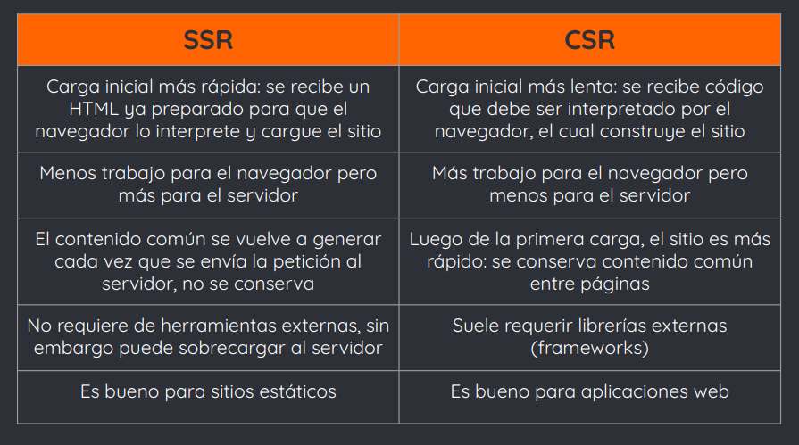

Resumen
1. Protocolo HTTPS
La clase pasada estudiamos el protocolo HTTP
- Recordemos: HTTP es un protocolo de transferencia de información a través de archivos en la web. Es un protocolo cliente-servidor, donde el cliente envía requests al servidor, el cual le contesta con responses
- Sin embargo, el protocolo HTTP tiene una falencia: es inseguro
- Cuando una página utiliza el protocolo HTTP, la información se envía sin encriptar
- Esto es, los datos enviados quedan expuestos y pueden ser interceptados por otros usuarios
- Esto puede suceder, por ejemplo, si estamos usando redes públicas para navegar
- Por lo tanto, es particularmente inseguro para manejar sitios con información sensible, como datos bancarios, contraseñas y mensajes
- HTTPS (Hypertext Transfer Protocol Secure) es un protocolo basado en el protocolo HTTP, destinado a la transferencia segura de información
- Permite una conexión segura entre cliente y servidor
- ¿Cómo funciona? Encripta datos para asegurar la transmisión segura de estos
- Los datos están encriptados y el servidor está autenticado
2. CRUD y gestión de datos
El CRUD está vinculado a la gestión de datos
- Se usa para referirse a las operaciones fundamentales en bases de datos o persistencia en un software:
➔ Create (crear registros)
➔ Read (leer registros)
➔ Update (actualizar registros)
➔ Delete (eliminar registros)
- CRUD resume las funciones que requiere un usuario para crear y gestionar datos
- Create: insertar nuevos registros y crear bases de datos
- Read: obtener registros luego de una búsqueda o lectura, a través de filtros o palabras clave
- Update: actualizar o modificar información
- Delete: eliminar registros temporal o permanentemente
CRUD ofrece distintas ventajas en los proyectos:
➔ Facilita el control de seguridad para los distintos requisitos de acceso
➔ Simplifica y facilita el diseño de la aplicación, haciéndola más escalable
➔ Tiene mejor rendimiento en comparación a las sentencias SQL
- Cada operación CRUD tiene un impacto directo en la memoria de almacenamiento persistente, es decir, retiene y guarda la información después de que se apaga el dispositivo
3. Programación back-end: definición
- Es aquella parte de la programación que no es visible para el usuario
- No se ejecuta en un navegador o dispositivo del cliente, sino en un servidor web
- Se ejecuta cada vez que un usuario interactúa con una página web
- Es la programación de todo lo que el usuario no ve: accesos a bases de datos, procesamiento de datos ingresados por el usuario, ejecución de scripts, etc.
- Un servidor web o servidor HTTP es un programa que procesa una aplicación back-end, realizando conexiones bidireccionales o unidireccionales y síncronas o asíncronas con el cliente
- Genera una respuesta en cualquier lenguaje o aplicación del lado del cliente
- Dicha respuesta puede ser: ficheros HTML y de otros tipos (ej, PDFs, imágenes, etc.), datos (JSON, XML, etc.), incluso una página web
- ¿Y cómo funciona una petición en el back-end? Cuando un usuario escribe una url en la barra de direcciones, ocurre el siguiente proceso:
1. El navegador hace una solicitud al servidor pidiendo la información de la url especificada
2. Durante este proceso, se ejecuta la lógica correspondiente en el back, como pueden ser consultas a bases de datos
3. Los datos obtenidos en el proceso anterior son enviados al front y procesados mediante herramientas frontend para ser plasmados en el sitio web
- Por ejemplo: si el usuario ingresa a google.com y hace la búsqueda de un término, en el back-end se procesa dicha petición y se le “pide” a la base de datos que devuelva los resultados correspondientes al término ingresado, para luego mostrarlo al usuario
4. Server-side rendering (SSR) vs Client-side rendering (CSR)
- Cuando se accede a un sitio web, el navegador debe renderizarlo, es decir, mostrar su contenido en la pantalla del usuario
- La forma en la que se hace el renderizado, tanto de scripts dinámicos como de código estático, varía según el enfoque que se le quiera dar al proyecto web
- Veremos dos de ellos brevemente: server-side rendering (SSR) y client-side rendering (CSR)
- Hablamos de SSR cuando el servidor toma todos los datos y componentes y crea un único archivo HTML con el CSS y JS correspondiente
- Es decir, el cliente envía una petición al servidor y éste le envía como respuesta un archivo HTML con todo el contenido: el servidor renderiza la página con cada solicitud recibida
- El navegador sólo debe interpretar el archivo HTML recibido: construye la página funcional e interactiva con él, sin necesidad de utilizar otras herramientas
- Hablamos de CSR cuando, a la petición del cliente, el servidor responde con un HTML básico, el esqueleto de lo que debe mostrarse
- Dicho HTML contiene únicamente código JS que ciertas herramientas (frameworks) saben interpretar para poder así renderizar la página en el lado del cliente

5. API: concepto
- Application Programming Interface, o Interfaz de programación de aplicaciones
- Interfaz que permite que distintas aplicaciones se comuniquen entre sí
- Una API permite que sus productos y servicios se comuniquen con otros y sean utilizados por otros, sin necesidad de saber cómo están implementados
- Esto simplifica el desarrollo de aplicaciones y abarata costos
- Dijimos que una API es una interfaz
- Una interfaz es una capa de abstracción para que dos sistemas se comuniquen
- Permite la interacción con un sistema sin necesidad de saber qué sucede por detrás
- Por ejemplo, un formulario de login.
Ingresamos nuestras credenciales, clickeamos ‘Iniciar sesión’ y nos loggeamos, sin necesidad de saber qué sucede por debajo
- Entonces una API es una interfaz para que se comuniquen aplicaciones y compartan datos entre ellas
También podemos decir que una API se trata de un conjunto de protocolos y definiciones que se utiliza para desarrollar e integrar aplicaciones, permitiendo la comunicación entre ellas a través de un conjunto de reglas
- Las APIs pueden ser privadas o públicas, remotas o locales
- Podemos pensar una API como un punto de acceso al que se le envía un request y devuelve una respuesta, generalmente, en formato JSON o XML (*)
(*) JSON: JavaScript Object Notation
- Formato de texto sencillo para la transferencia de datos, utiliza objetos JavaScript
(*) XML: eXtensible Markup Language
- Formato de texto plano para la transferencia de datos, utiliza etiquetas personalizadas
- Ejemplos de comunicación entre apps:
(1) Una app de movilidad (uber, cabify) utilizará los mapas de Google
(2) El widget del pronóstico se conectará a un proveedor de información del clima
(3) Un e-commerce utilizará pasarelas de pago (mercadopago, paypal) para realizar cobros
- Estas conexiones o comunicaciones entre una app y otra se hacen a través de las APIs
- El widget del clima enviará un request a la API de clima
- Dicha API devolverá una respuesta en formato JSON o XML
- El widget interpretará la información y la presentará al usuario, sin necesidad de entender cómo fue que la API consiguió los datos
¿Y para qué nos sirve una API?
- Para facilitar el trabajo de los desarrolladores
- Ahorra tiempo y dinero
- Permite reutilizar código ya creado por otros desarrolladores
- Permite utilizar las funciones de determinados servicios para ofrecer ventajas
- Para crear una API, necesitaremos un servidor, que es donde alojaremos la API, y un lenguaje backend, que nos permitirá escribir su código
- La comunicación entre la API y otras apps ocurre gracias al protocolo HTTP, mediante el cual recibiremos las requests y enviaremos los datos
- Según la request (GET, POST, PUT, DELETE será la acción a realizar en el código de la API
- Por último, debemos proveer de endpoints a los usuarios de la API
- Esto es, puntos de conexión para poder interactuar con la API. Son rutas o URLs a las cuales el servicio consumidor deberá navegar para realizar la request
- Todo esto es conocido como API REST (Representational State Transfer), un estándar para escribir APIs
- Estudiaremos REST más adelante en la materia
6. Arquitectura de software
- Es la estructura y relación entre diferentes partes de un software
- Define la estructura que debe tener un software, los componentes que debemos construir y el modo en el que se deben comunicar entre ellas
- Son patrones que ayudan a la construcción de un programa o aplicación
- Su principal objetivo es ofrecer calidad al manejo de datos, a través de:
➔ su desempeño
➔ ahorro de tiempo
➔ su disponibilidad y usabilidad
➔ la capacidad de modificarse y adecuarse a las nuevas necesidades del sistema
➔ reducción de costos
➔ mejora en la toma de decisiones
- Se define a alto nivel mediante una serie de patrones y abstracciones a seguir para el desarrollo del software y para la interacción entre sus diversas piezas
- Estudiaremos las piezas de software:
→ Modelos: se encargan del manejo de datos
→ Vistas: se encargan de la presentación de los datos al usuario
→ Controladores: se encargan de coordinar el trabajo entre modelos y vistas, manteniendo una lógica de aplicaciones
7. Patrones de diseño
- Son técnicas para resolver problemas comunes, generalmente aplicados en el desarrollo de software
- Son soluciones habituales a problemas frecuentes
- Podemos pensar un patrón como un plano personalizable a seguir para resolver una cuestión particular en el código de nuestra aplicación
- Son plantillas reutilizables que identifican problemas en el sistema y proporcionan soluciones apropiadas a problemas generales
- Los patrones de diseño nos ayudan a estar seguros de la validez del código, ya que son soluciones que funcionan y han sido probadas por muchísimos desarrolladores
- Existe un amplio catálogo de patrones de diseño, los cuales se clasifican en:
→ Creacionales (mecanismos de creación de objetos)
→ Estructurales (cómo ensamblar objetos y clases en estructuras más grandes)
→ Comportamiento (comunicación efectiva y la asignación de responsabilidades entre objetos)
- Nosotros vamos a estudiar el patrón de diseño de arquitectura de software MVC, mencionado anteriormente
- MVC es un patrón estructural, que separa los datos de una aplicación de la interfaz de usuario y a su vez de la lógica de control, en 3 componentes distintos (modelo-vista-controlador)